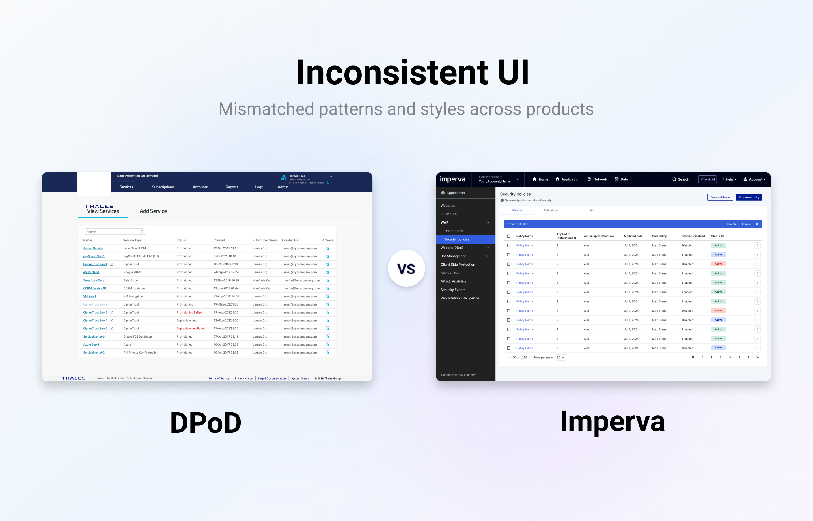
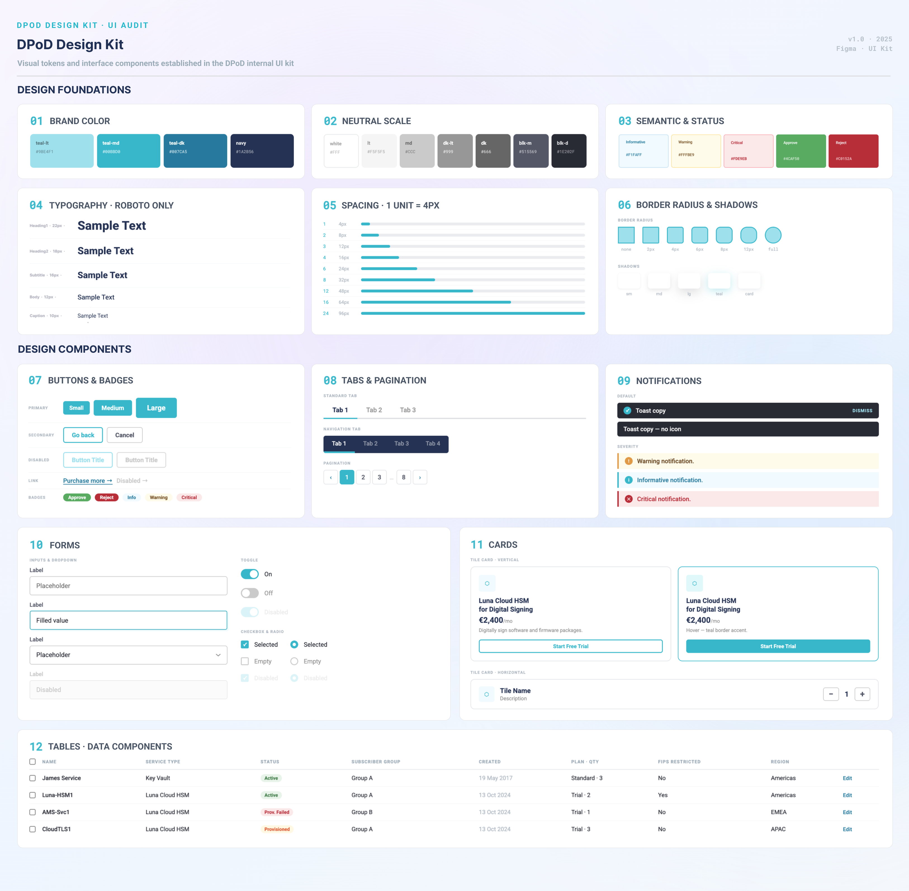
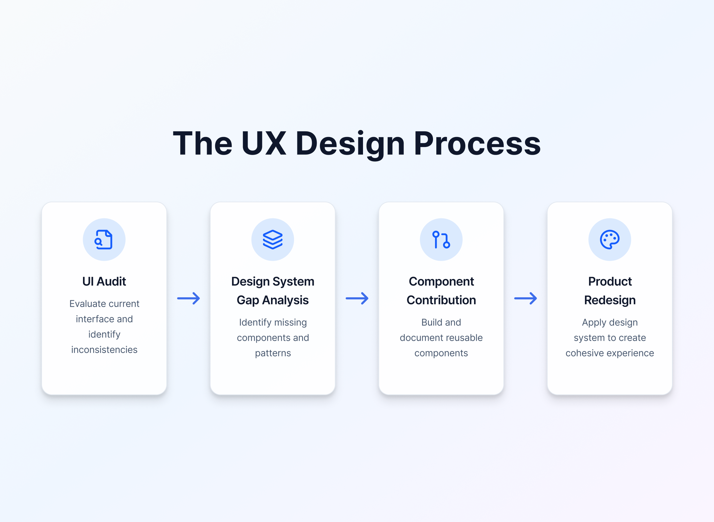
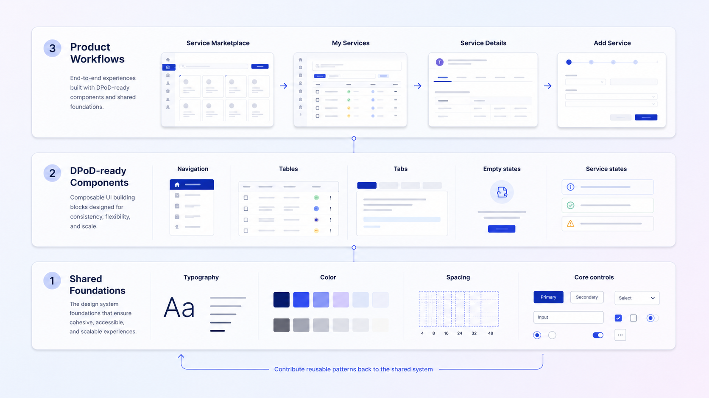
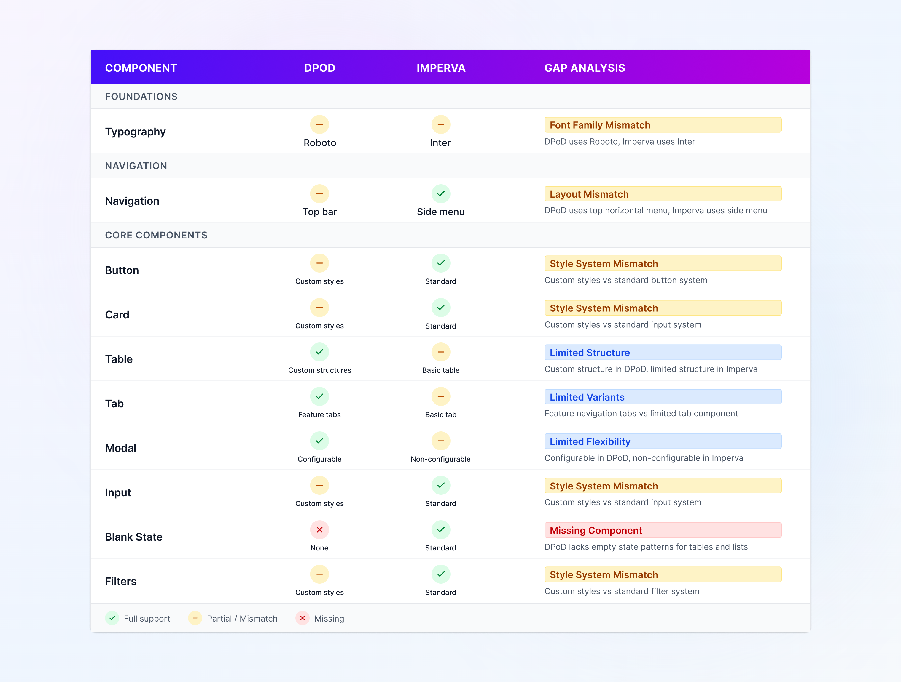
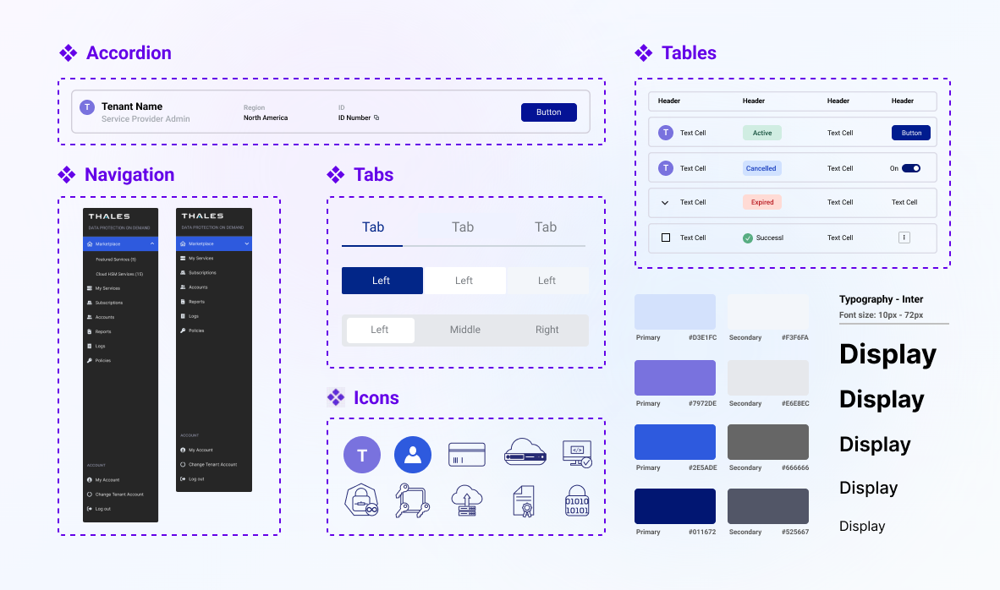
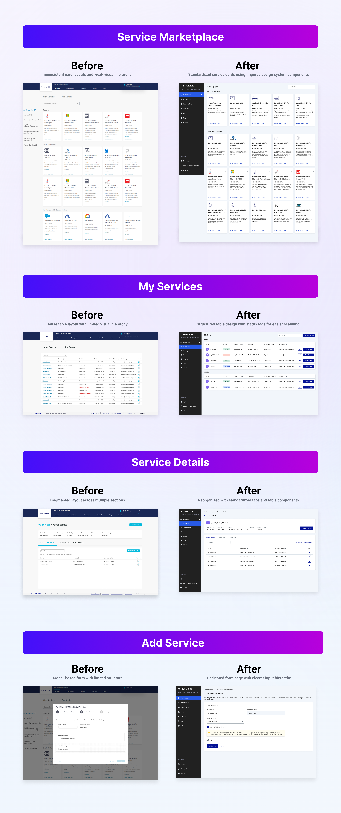

Thales DPoD Redesign
Building a scalable design-system foundation for complex enterprise security workflows

01OVERVIEW
Creating a shared foundation for a complex security platform
DPoD is Thales’ cloud-based platform for deploying and managing cryptographic services that help organizations protect sensitive data and encryption keys. As the product grew, its interface had accumulated custom patterns that no longer aligned with the broader Thales security portfolio.
I helped lead a six-month platform redesign that aligned DPoD with the Imperva design system while preserving the workflows enterprise customers already relied on. The work combined a product-wide UI audit, design-system gap analysis, reusable component contributions, and the redesign of four critical service-management surfaces.
02WHAT PROMPTED THIS INTERVENTION
Independent product evolution created a fragmented experience
DPoD and Imperva had evolved independently within the same security ecosystem. Their typography, navigation, components, and interaction patterns looked and behaved differently, while many DPoD interfaces relied on product-specific UI rather than shared system components.
This fragmentation made the experience less predictable for users and created unnecessary design and engineering overhead. Each new workflow risked introducing another local pattern instead of strengthening a reusable product foundation.

03KEY INSIGHTS
The redesign required more than visual consistency
The UI audit revealed three system-level issues:
- Foundations were inconsistent. Typography, color, spacing, and navigation varied across products.
- Custom patterns increased maintenance. Similar interface needs were repeatedly solved through product-specific components.
- The shared system had coverage gaps. Some DPoD workflows could not be supported through direct component adoption alone.

04DESIGN CHALLENGE
How might we align DPoD with a shared design system while preserving the clarity and flexibility required by its enterprise security workflows?
05DESIGN PRINCIPLES
Four principles guided the redesign
- Adopt before inventing. Use established Imperva patterns whenever they could support the workflow effectively.
- Preserve workflow clarity. Improve the interface without disrupting familiar service-management tasks.
- Extend the system deliberately. Create new patterns only when a validated product need was not already covered.
- Design for reuse. Define components, variants, and states that could support future workflows beyond one screen.
06DESIGN STRATEGY
Moving from interface audit to system-led redesign
I structured the work as a four-part system migration: audit the current interface, map DPoD patterns to the shared library, contribute missing components and variants, and apply the expanded system to real product workflows.
This sequence allowed the team to make redesign decisions from evidence rather than visual preference. It also connected every system contribution to a concrete product requirement.

07DESIGN PROPOSAL
A shared system tailored to DPoD’s product reality
Rather than treating the redesign as a one-time visual refresh, I proposed a system-led model. Existing Imperva components would establish the common foundation, while carefully defined additions would support DPoD-specific navigation, data density, service states, and task flows.
The proposal connected three layers of work: shared foundations, reusable product components, and complete service-management experiences. Together, they created consistency at both the interface and implementation level.

08DESIGN DECISION #1
Use the shared system selectively
The gap analysis showed that design-system adoption was not binary. Some foundations and components were fully supported, while navigation, tables, tabs, and empty states required adaptation or additional coverage.
I used this mapping to determine which patterns could be adopted directly and which needed to preserve DPoD’s existing task structure. This created consistency across products without forcing DPoD into interaction patterns that did not fit its workflows.

09DESIGN DECISION #2
Extend the system instead of creating local exceptions
Several recurring DPoD needs were not supported by the shared library. Solving them as product-specific exceptions would have recreated the fragmentation the redesign was intended to address.
I designed reusable navigation, table, tab, icon, and state variations with defined structures and behaviors. These additions allowed DPoD to meet its product requirements while expanding the shared system for future enterprise workflows.

10APPLYING THE SYSTEM
Redesign complete workflows—not isolated screens
I applied the expanded system across four critical DPoD surfaces: Service Marketplace, My Services, Service Details, and Add Service.
Working at the workflow level ensured that the redesign improved visual hierarchy and interaction consistency without changing the underlying task model users already understood. It also revealed where shared components needed additional flexibility before implementation.

11BUSINESS & PRODUCT IMPACT
Establishing a more scalable foundation for DPoD
Across six months, the redesign aligned two previously independent product experiences around one shared design language and applied the expanded system to four critical DPoD surfaces.
The work replaced fragmented custom patterns with reusable foundations and component variants, giving designers and engineers a clearer reference for future features. It also demonstrated how the shared system could evolve to support complex enterprise workflows without sacrificing product-specific clarity. Formal post-launch product KPIs are still being collected.